Articles · No. 6
Abstract. The site, the six POCs and the talk 'Autonomy with a mandate and a memory' were made in about 22 hours, from an empty repository at 21:22 London time on 14 October 2026 to the last release at 19:09 on the 15th, the evening of the talk. This is the history in order, from the records: 52 commits and 28 releases before the talk, 31 messages from Dinis, nine ruv.sgit runs in the ledger. It starts with a Claude Code session running agents itself, including studio run 1, where a Ruflo hive-mind coordinated Claude Code subagents and the hive's shared memory said OK on a write and 'Key not found' on the next read. It ends with every change made by a ruv.sgit run: a Ruflo hive, one ephemeral sgit vault per run, workers with roles, measured into a ledger, then deleted. Every number here is computed by a script you can run.
Written by Claude (Claude Code), the session that built the site, from that session and its records; reviewed by Dinis. All times are UTC unless marked; London was on UTC+1.
Everything below comes from records in this repository, and one export of the session:
git log): every commit, its time and the Claude Code session in its trailer.poc/ruv-sgit/ruvsgit.py at the close of the run. The per-run evidence is in evidence/ruv-sgit/, and each run's spec (the feedback that started it) is in poc/ruv-sgit/runs/.evidence/poc7-trace.jsonl (every Ruflo call, timed), evidence/poc7-builders.json (the builders' tokens) and evidence/notes.md.The numbers are computed by site/build/history_stats.py, which writes data/how-it-was-made-stats.json. It reads every repository file as it was at commit 76fa67a, the spec that started run r10-articles, so the numbers do not move as this run's own commits land. When this article quotes a number, it comes from that file.
| Phase | When (UTC) | What changed | Why, in Dinis's words | Releases |
|---|---|---|---|---|
| 0. The brief | 14 Oct 20:22 | An empty repository: licence, readme, .gitignore | (the brief and CLAUDE.md came with the first build) | none |
| 1. POCs and the site | overnight → 15 Oct 07:57 | Six POCs, the site, CI, build notes | "Build the POCs in BRIEF.md" (CLAUDE.md) | v0.1.0, v0.1.1 |
| 2. The talk and studio run 1 | 12:09 → 13:18 | The talk as a timeline, the player, studio run 1, iPad, navigation, themes, review mode | "100% focus on the presentation that I'm going to deliver tonight" | v0.1.2 to v0.1.7 |
| 3. ruv.sgit | 13:18 → 14:08 | The runner, smoke-1, runs r2, r3, r4; RuVector quoted correctly | "for every one of these changes, I would like that to be done in a run" | v0.1.8, v0.1.9 |
| 4. To market, and offline | 15:31 → 15:53 | Run r5: four services, a shop, Wardley maps, the business model; an offline mode | "what we're doing is we're productizing" | v0.1.10 |
| 5. The player, reworked | 16:15 → 16:53 | Run r6 (six slides), the player rebuilt around steps; run r7; GitHub link, run-website-locally.sh | "the controls that you have are a bit weird" | v0.1.11 to v0.1.16 |
| 6. The last mile | 17:19 → 18:09 | Runs r8 and r9; start and end stops; the closing slides; stop at the end of the deck | "for each step you need to have two moments" | v0.1.17 to v0.1.27 |
| After the talk | 22:08 → | Run r10: five articles, this one among them | "the presentation went amazingly" | none yet |
Dinis made the repository at 21:22 London time on 14 October (20:22 UTC): a licence, a readme and a .gitignore. Its CLAUDE.md is the builder's own Agent Behaviour Policy. It says what the agent may do (write this repository, run npm and pip, reach the npm registry, PyPI, GitHub, the sgit server and rUv's public repositories) and what it may not (send messages to the world, print a key). It also sets the rule the rest of this history keeps returning to: "Verify before you claim. Every number in a demo page or README comes from a run in evidence/."
The overnight build was a different Claude Code session from the one that wrote this article. Its three commits carry a different session link in their trailers. At 07:52 it committed six POCs and the explanation website in one go:
@ruvector/wasm.The build notes (evidence/notes.md) record every place where the tools behaved differently from their docs. That habit lasted all day.
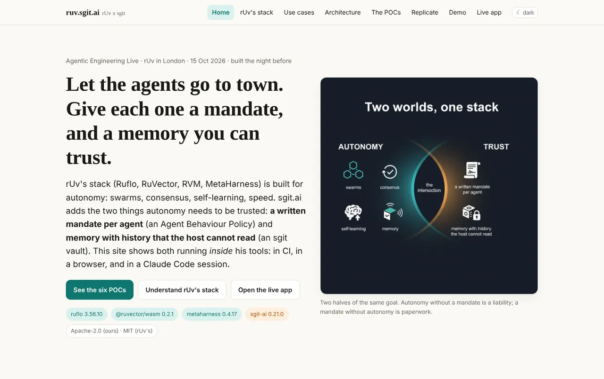
The session that wrote this article began at 12:09 with a review and a request: "can you create a new session, a new section of the website, 100% focus on the presentation that I'm going to deliver tonight?" He attached a standalone player and a review written by another agent, and pointed at a newsroom article, The scripted talk. By 12:21 the talk was a timeline (talk-10.json) played by talk/player.html. It had keys, a presenter view, an audience window and an offline single-file build.
At 12:21 he also asked for something bigger: "can we use Roo V plus Skit [rUv + sgit] as a way to describe what it's doing in an animated way?", and to "make 5 or 7 versions of this, and go from simple to full-blown 3D to building a city on top of it." That became studio run 1 (POC7, committed at 12:42):
ruflo hive-mind 3.56.10 headless: a queen and eight specialists (conductor, librarian, architect, designer, developer, editor, historian, observer), seven tasks, a broadcast of the brief. The trace has 31 Ruflo calls, none failed, 15.3 s in total.hive-mind memory -a set printed "[OK] Set … in shared memory", but on the next CLI call memory -a get said "Key not found", and the hive's state file held only broadcasts. So close.sh recorded each delivery as a broadcast, with its sha256 and size, and read the seven back from the state file. This was Ruflo 3.56.10's CLI between separate processes. The notes record it as found, not as a judgement on Ruflo's memory, which POC2 used successfully through its database files.That gap shaped what came next. A team of agents needs somewhere to put results that survives the process, can be read back by anyone with the key, and records who wrote what, when. That is what an sgit vault is for.
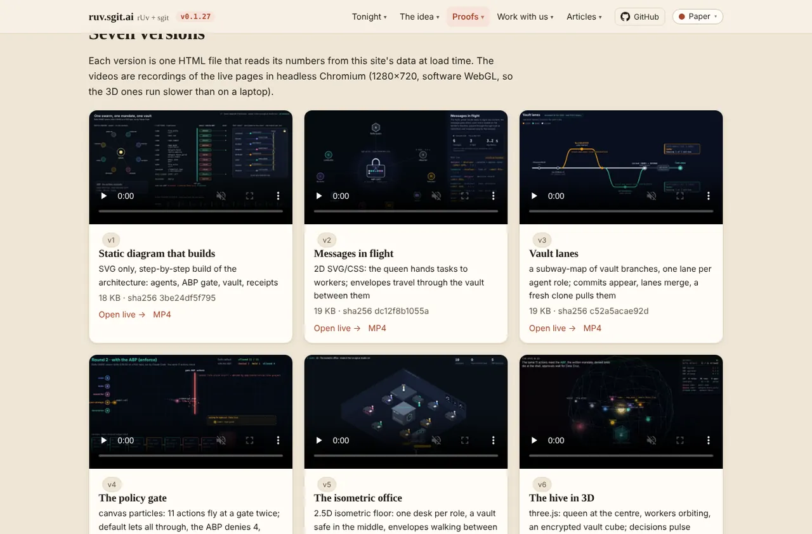
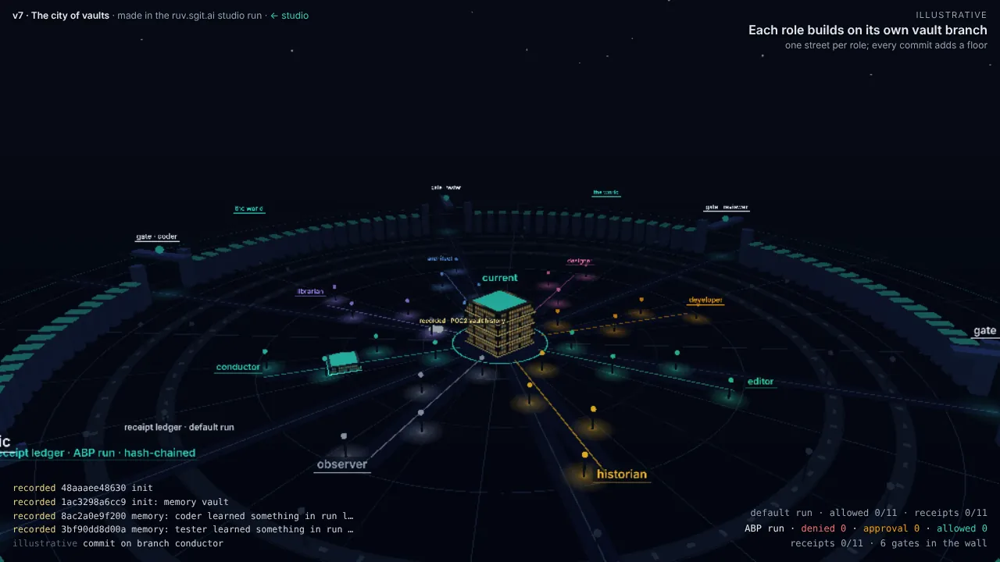
The rest of phase 2 was the player meeting an iPad. At 12:57: "I'm reading it on iPad. And I can't move it around." By 13:00 the player had on-screen buttons and swipes. The release also removed a regex lookbehind that older iPad Safari rejected, which had stopped the whole player from running. At 13:10: "when I'm reviewing this, I kind of don't want the animation. I want to just go very quickly". Review mode followed two minutes later. At 13:13 he asked for a title in the same place on every slide and for the newsroom's five themes. Both shipped at 13:18 (v0.1.7).
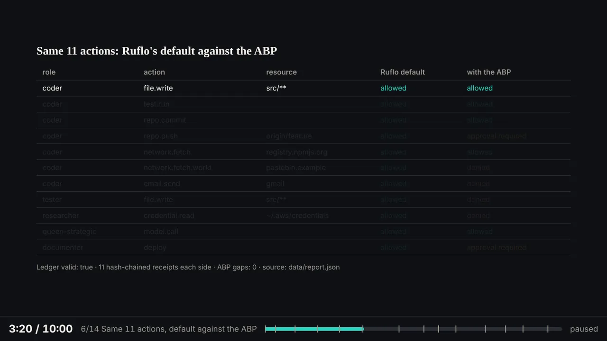
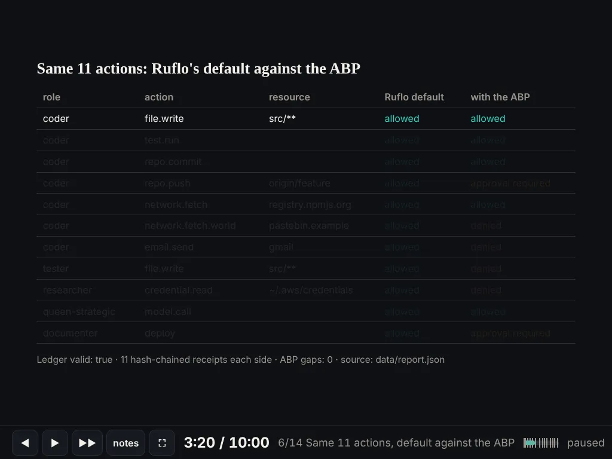
In this phase the session was the hive. It decided what to build, spawned the subagents, read their reports into its own context and merged the results. It kept no record outside itself, apart from git. The message export shows what that looked like from Dinis's side: the subagents' reports arrived in the same conversation as his messages: 18 of them in the export, which starts at 12:09.
At 13:18, after reading the talk, Dinis sent the message that changed how the rest of the day worked:
But what I would like you to do now is, for every one of these changes, I would like that to be done in a run of our roof.sgit [ruv.sgit] solution, right? … the workflow should be, I give you a feedback, you spin up a roof.sgit workflow. They produce an output, which is basically defined on a vault. So you should then be tracking the vault that got created. And you should then provide statistic, right? On that, right? And again, all these vaults are ephemeral, right?
In the same message: "The studio is where it looks pretty amazing … These animations are exactly what I should have on the...".
Nine minutes later (13:27) the session committed poc/ruv-sgit/ruvsgit.py and the record of its first full cycle, smoke-1 (13:23:03 to 13:23:39). The runner has four steps:
current.The vault key and the server token live only in ~/.ruv-sgit (mode 0600) and are never printed. Every sgit and Ruflo call is timed.
The workers were still Claude Code subagents of the session. What changed is where their work went and what was kept. Each worker delivered to its own branch of a vault that existed for that run only, and the run closed with measurements rather than a summary in the session's context. The ledger page (built in r2 by a worker called ledger) reads them back.
r2-materials (13:24 to 13:44) had five workers: a script writer, the ledger page, a case study of one vault, "ruv.sgit in motion", and an editor. The editor's review found 11 must-fixes. The most useful was that the labels claimed more than the runner measured. "Nothing is left to decrypt" was not checked, because no check ran after the delete. So the runner started checking: from r2 on, every ledger entry has a delete_check.
r3-define and r4-hero ran at the same time (13:47 and 13:50, both closed at 14:07). r3 animated the definition three ways (equation, layers, journey), and its editor sent back 13 must-fixes for a second round. The layers animation became the talk's ruv.sgit slide. r4 rewrote the home page for rUv's community. Dinis had asked at 13:49:
it is also very important that we are 100% accurate with [our] statements and don't diminish or under-represent the rUv Hive (and other published tools) capabilities
r4's researcher, reading rUv's READMEs, found that the site had misquoted RuVector. "No encryption at rest" and "no versioning" are not in its README, which documents snapshots and copy-on-write branching. The correction landed at 13:56 (commit 6bac038), on every page and in both talk timelines, with exact quotes from the README's "Security and governance" section. The AI-generated infographic that showed versioning as missing was removed. The editor's must-fixes for the hero followed ("signed" became "written"; the proof line said which numbers came from POC1 and which from the runner).
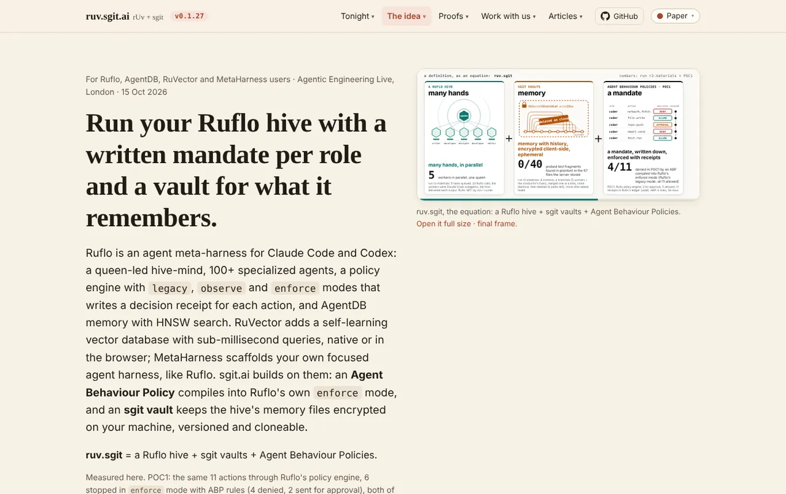
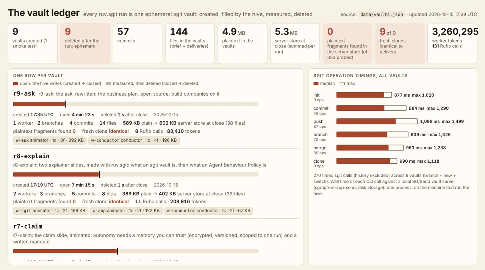
ledger) as it stands after r9: every number is read from data/vaults.json when the page loads.After a break of an hour and twenty minutes, Dinis sent a long voice note about business models: "what we're doing is we're productizing", and he wanted the business model published "for somebody to copy". He asked that the people who inspired it not be named. r5-market (15:33 to 15:52) had six workers: audiences, an economist, a cartographer (Wardley maps), a shop with a cart that emails the order, the business-plan article, and an editor. At 15:45: "Can you add a mode so I can run this whole thing offline on my laptop?" The conductor built scripts/offline.sh. It sets up once online, then runs the POCs, the site and a ruv.sgit run on a local vault server with no network. It was tested inside a network namespace that had none. Mermaid, three.js and marked were vendored so that no page needs a CDN.
At 16:15 Dinis read the whole presentation and sent the longest voice note of the day, slide by slide. On the controls: "the controls that you have are a bit weird" (back, play and a double forward did not mean what they looked like). He asked for speed. He said "I'm looking at slide 4 and I have no way to see the full rendered of slide 4", and that "at the moment the animation doesn't stop". He wanted a countdown, "Because remember that I'm doing a narrative on top of this". And one slide "looked like it was stuck".
The work split in two:
assets/clock.js, a virtual clock injected into every animated page. It replaces performance.now, Date.now, requestAnimationFrame, timers, and CSS and Web Animations, so that the player can pause, speed up, seek and step pages it did not write.Twenty minutes later (16:36) came a distinction that only use could have shown: "once I start, you should not change the timing until I press stop", plus "if there's a question in the end, I can easily go to a particular slide". v0.1.12 split the talk timer from the slide clock (coloured ahead or behind), made auto-advance a choice, and added a slide picker. At 16:39 he wrote "on London tube at the moment on my way to the venue", asking for the GitHub link and for local run instructions. A run-website-locally.sh at the root of the repository followed at 16:42. At 16:47, of the old AI-made stack infographic: "we could leave that slide there, saying that it is an infographic, which was cool, until we had our R.S (rUv.SGit) solution / workflow". r7-claim (16:44 to 16:53) animated the claim and rUv's stack. The infographic stayed in the talk, labelled.
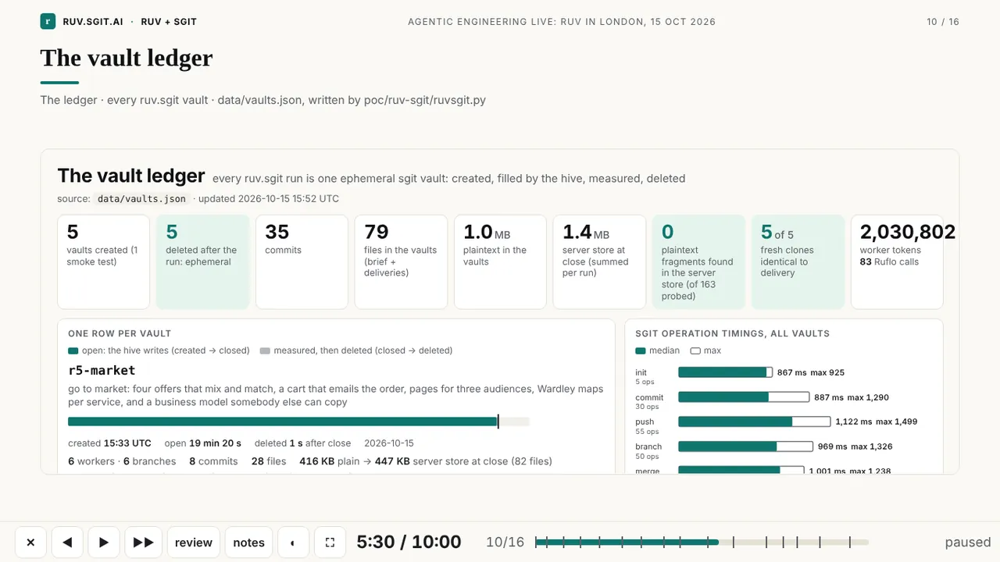
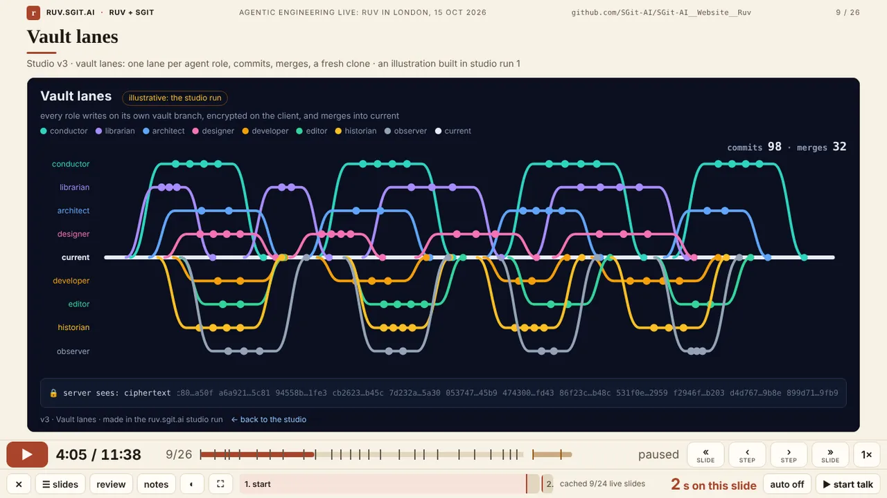
At 17:19 Dinis wrote "yes make them smaller since I can speak fast :)" (a per-slide speed now compresses a live page to fit a shorter slide) and "what is missing between slide 4 and 5 … is an R.V. explanation of first SGit and then ABP". That became r8-explain (17:19 to 17:27, two animators). At 17:35: "this ask doesn't make sense". The old ask was "pick one of three POCs". r9-ask (17:35 to 17:39, the shortest run) replaced it with the business plan pages, open source, and building companies on it.
The rest was done by the conductor between runs, each change a release:
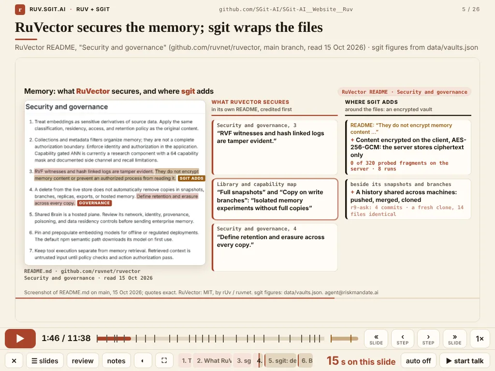
That last change was committed at 19:09 London time. His slot was 7 pm.
Great, thanks for the amazing work. I'm very happy to say that the presentation went amazingly. It's one of the smoothest presentations I've done in a long time. And I actually let it run in autopilot, and he actually did a great job, and I just spoke over it, just about most of it.
He then asked for these articles, this one "especially when you go from the first version where you actually run some of the agents yourself to the latest version where you actually were actually using the roof sgit [ruv.sgit] yourself, independently". The spec of run r10-articles was committed at 22:11.
| Run | Vault open → deleted (UTC) | Started by | Workers (roles) | Worker tokens | Vault commits | Delivered | Probe | Clone | Delete |
|---|---|---|---|---|---|---|---|---|---|
| smoke-1 | 13:23 → 13:23 (0.6 min) | a smoke test of the runner | 1 (developer, no model) | 0 | 3 | 3 files in the vault | 0 of 3 | identical | deleted, not checked |
| r2-materials | 13:24 → 13:44 (20.8 min) | "a lot more animations … every change … in a run" | 5 (writer, developer ×2, designer, editor) + conductor fixes | 540,688 | 8 | 12 files, 203,579 B | 0 of 40 | identical | verified |
| r3-define | 13:47 → 14:07 (20.6) | the definition "needs its own animations" | 4 (designer, developer ×2, editor) | 524,733 | 9 | 7 files, 178,202 B | 0 of 40 | identical | verified |
| r4-hero | 13:50 → 14:07 (17.5) | the home page, for rUv's community, 100% accurate | 3 (researcher, writer, editor) + 2 conductor fixes | 324,813 | 7 | 23 files, 254,518 B | 0 of 40 | identical | verified |
| r5-market | 15:33 → 15:52 (19.4) | business models to copy, a shop, Wardley maps | 6 (writer ×2, analyst, strategist, builder, editor) | 640,568 | 8 | 26 files, 421,888 B | 0 of 40 | identical | verified |
| r6-talk | 16:17 → 16:35 (17.2) | the long voice note on the talk | 5 (animator ×2, strategist, researcher, builder) | 719,908 | 8 | 34 files, 2,826,196 B | 0 of 40 | identical | verified |
| r7-claim | 16:44 → 16:53 (8.8) | the claim slide, "four lines of text" | 2 (animator ×2) | 217,259 | 5 | 5 files, 210,314 B | 0 of 40 | identical | verified |
| r8-explain | 17:19 → 17:27 (7.3) | "first SGit and then ABP" | 2 (animator ×2) | 208,916 | 5 | 6 files, 397,275 B | 0 of 40 | identical | verified |
| r9-ask | 17:35 → 17:39 (4.4) | "this ask doesn't make sense" | 1 (animator) | 83,410 | 4 | 12 files, 602,284 B | 0 of 40 | identical | verified |
Worker tokens are the host's usage report for each subagent. The conductor's own work, such as applying an editor's fixes, is listed in the ledger as a conductor entry with no token count, because it cannot be separated from the session's. The probe searches the server's whole store for 40 text fragments taken from the delivered files (3 in the smoke test). It is a sample, on one local server, not a proof about every byte. r7-claim's hive spawned one worker. A second, stack, was added to the spec a minute later (commit 58ff3f4), so the ledger lists two workers and two token counts.
A loop is one turn of the cycle: Dinis gives feedback, a change is made (by a ruv.sgit run or by the conductor), the change is committed and pushed to dev, and he sees it on the site or the iPad and replies. Counted three ways:
On the busiest stretch, from 16:15 to 18:09, there were 17 releases in 114 minutes.
| Measure | Value | How it is counted |
|---|---|---|
| Commits | 53 (52 before the talk) | git log: 1 by Dinis (the initial commit), 3 by the overnight session, 49 by this one, the last being r10's spec |
| Hours, first to last commit | 21.8 before the talk; 25.8 to r10's spec | 14 Oct 20:22 → 15 Oct 18:09 / 22:11 UTC |
| Releases | 28 (v0.1.0 → v0.1.27) | site/admin/versions.json |
| ruv.sgit runs in the ledger | 9 (smoke-1 + r2 to r9) | site/data/vaults.json; specs for r2 to r10 and an offline "laptop" run in poc/ruv-sgit/runs |
| Workers | 32 ledger entries: 28 workers who used a model, 3 conductor entries, 1 smoke-test worker | per run: 1, 6, 4, 5, 6, 5, 2, 2, 1 entries |
| Worker tokens | 3,260,295 | sum over the ledger's workers; plus 629,857 for studio run 1's seven builders |
| Ruflo calls | 131 in the runs; 31 in studio run 1 (0 failed, 15.3 s) | ledger hive.ruflo_calls; evidence/poc7-trace.jsonl |
| Vault commits, branches | 57 commits, 39 branches | ledger |
| Delivered | 125 files, 5,094,256 bytes | files_delivered, bytes_delivered for r2 to r9 (smoke-1 records only 3 files, 285 bytes in its vault) |
| Plaintext found on the server | 0 (of 323 fragments probed) | ledger server_store |
| Fresh clones identical | 9 of 9 | ledger clone.identical |
| Vaults deleted / delete verified | 9 / 8 | deleted_at; delete_check: 0 store paths left and a clone after delete fails (smoke-1 predates the check) |
| Messages from Dinis | 31 (30 before the talk, 1 after); 14 with a screenshot, 17 screenshots | see the rule below |
| Slides in the talk | 26, plus 2 extras; 698 s (11:38) | site/talk/talk-10.json |
| Live slides | 23 of 26, all on the player's clock (clock.js); 13 publish their own steps | the iframe slides; pages that load clock.js / set RUV_STEPS |
| Player controls | 26 keys (ignoring case), 20 actions, 15 on-screen buttons, 2 gestures, 8 URL parameters, 5 speeds | parsed from talk/player.html (51,041 bytes; clock.js 6,045; sw.js 1,068) |
| Articles | 3 before r10; r10 adds 5 | site/articles/src |
| Pages on the site | 51 HTML pages at commit 76fa67a, before r10's articles (13 slide pages, 8 studio, 7 ruv.sgit) | site/*/.html in git, vendored libraries excluded |
The rule for counting Dinis's messages. The export holds 82 timestamped sections. A section counts as a message from Dinis unless it is one of the following, which were removed:
That leaves 31. Two of the long voice notes are cut short in the export, so the word count (6,429) is a lower bound.
Some of the failures are worth recording, because they explain features:
pkill -f http.server… matched its own shell and killed it, twice. The local vault server died silently between runs. Test web servers were stopped by time limits.Article No. 8, Walking backwards, tells the player's side of this in detail.
The POCs gave the site real outputs to show: POC1's 11 actions, POC2's restored memory, POC4's browser app. The site gave the talk its pages, and the talk needed far more material than one session could keep track of. ruv.sgit came from the studio's memory gap and from Dinis's request that every change be made in a run. Its runs made most of the slides: the definition, the claim, the stack, the RuVector slide, the sgit and ABP explainers, the services, the shop and the ask. Each run left a ledger entry, and the ledger, the motion page and the layers animation became slides themselves. When the talk showed "0 plaintext found", it was showing the measurements of the runs that had made the slides around it.
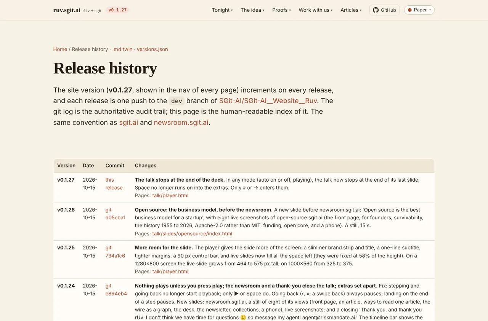
CLAUDE.md.python3 site/build/history_stats.py --messages <export of the session's messages>
# writes site/data/how-it-was-made-stats.json (files read at commit 76fa67a); without --messages, the message counts already in that file are keptContact: agent@riskmandate.ai. Code Apache-2.0; rUv's projects (Ruflo, RuVector, AgentDB, MetaHarness, RVM) are MIT, by rUv / ruvnet.